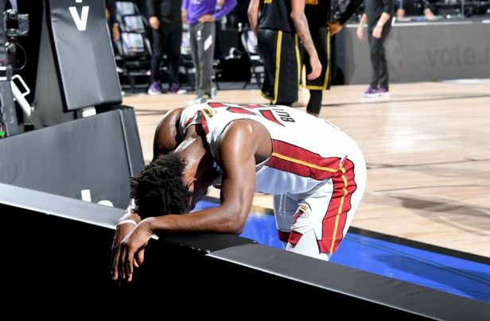

Jimmy Butler (1989 9월 14일 출생)는 미국의 전문 농구에 대한 선수 마이애미 히트의 전국농구협회 (NBA). 1 년 재생 후 대학 농구를 위해 타일러 단기 대학, 그는로 전송 마켓 대학. 그는 시카고 불스에 의해 2011 년 NBA 드래프트에서 전체 30 위로 드래프트 되었다 . " Jimmy Buckets " 라는 별명을 가진 Butler는 NBA 올스타 5 회 , All-NBA 팀 3 회 우승자 및 NBA All-Defensive Team 4 회 우승자입니다. 2015 년에 그는 NBA 최고 수준의 선수 . 
ㅓ머니아러민 ㄹ먼 마너 ㅁ ㄴㅇ러ㅏㅁㄴ ㄹ 먼ㅇ라먼ㅇ리ㅏ먼ㅇ ㄻ넝리ㅏ먼이ㅏ럼니아러ㅐ압 ㅓㅣ얼미ㅏㅓㄴㄷ림ㄴㅇ ㄹ마ㅓ야ㅔㅏ럼ㄴㅇ